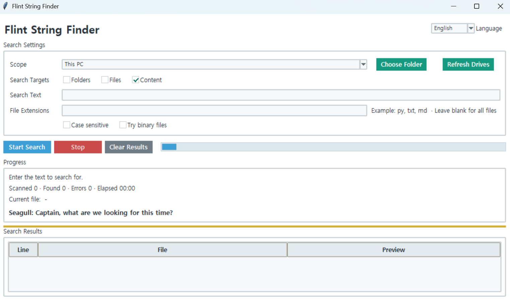
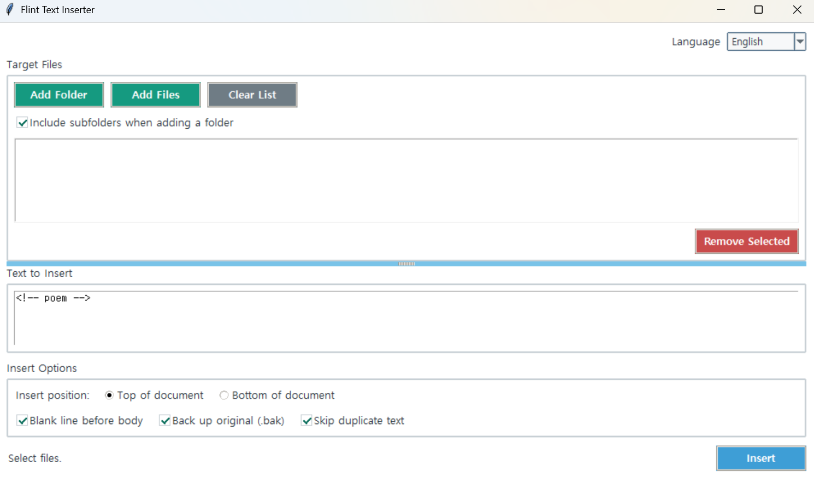
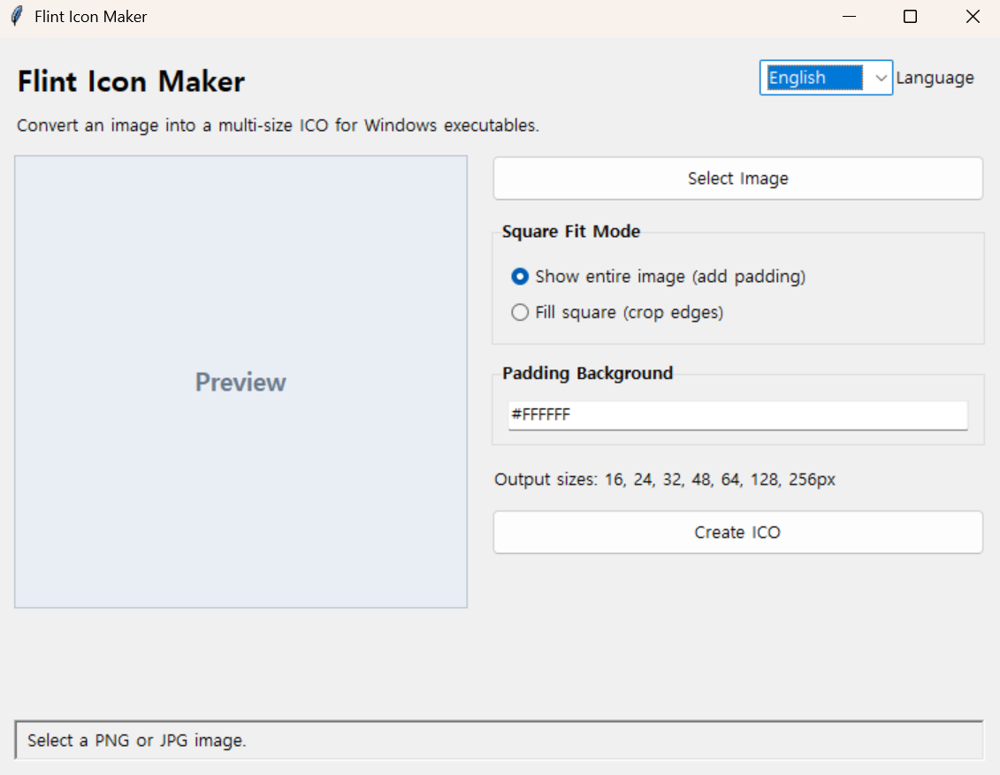
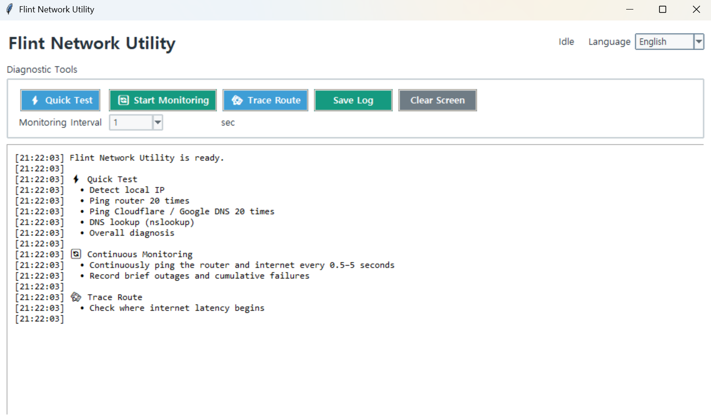

Flint String Finder
It is a GUI search tool for Windows that finds files containing a specific string across multiple drives or folders.
A toolbox Flint has filled throughout the voyage.

It is a GUI search tool for Windows that finds files containing a specific string across multiple drives or folders.

A tool for inserting the same text at the beginning or end of multiple text files at once.

A GUI tool for converting PNG, JPG, WEBP, and BMP images into multi-size ICO files for Windows.

A Windows network diagnostic tool that helps identify whether internet disconnections or latency are caused by your PC, router, external network connection, or DNS./hehfoewhfoewhoewhfoewhfohewfowhfowhfoiwehfowhfo